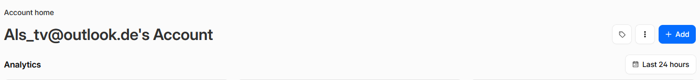
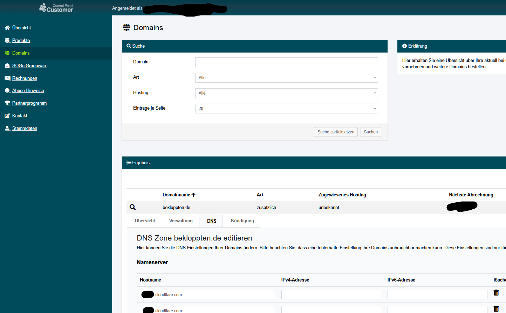
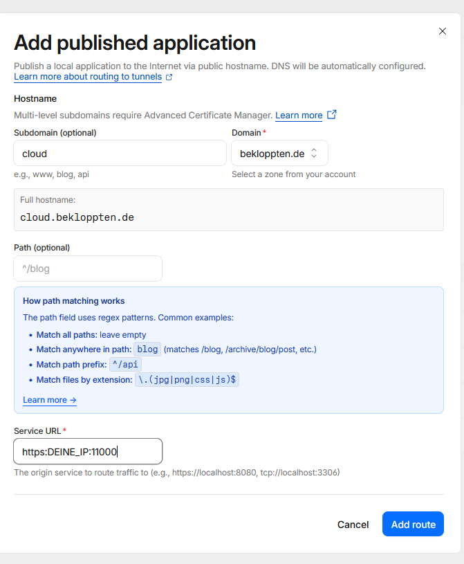
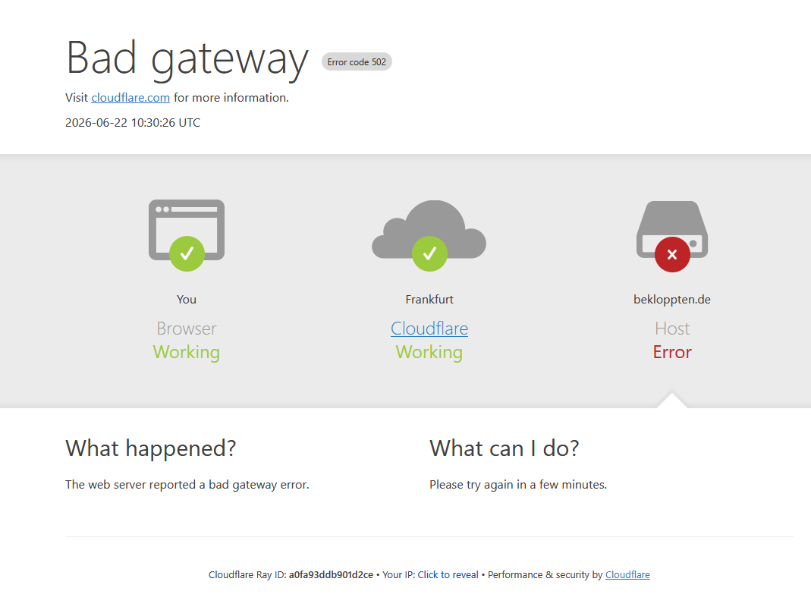

Du möchtest einen Dienst aus deinem Heimnetz oder Server veröffentlichen,
ohne Ports im Router freizugeben?
Mit einem Cloudflare Tunnel geht das einfach und sicher:
Dein Server baut selbst eine ausgehende Verbindung zu
Cloudflare auf und Cloudflare leitet Anfragen an deinen Dienst weiter.
- ✅ Eine Domain (hier: Beispiel mit Netcup, ab 5€ im Jahr)
- 🐳 Docker(Docker Artikel)
- 🖥️ Einen lokalen Webdienst (z. B. Nextcloud, Website oder Dashboard)
1️⃣ Domain zu Cloudflare hinzufügen
Melde dich bei Cloudflare an und füge über Add -> Connect a domain deine Domain hinzu.

Cloudflare zeigt dir anschließend neue Nameserver an.
Kopiere dir Beide
Wenn deine Domain bei Netcup liegt:
1. 🔐 Im Customer Control Panel anmelden2. 🌍 Domain auswählen
3. ⚙️ DNS / Nameserver öffnen
4. ☁️ Cloudflare-Nameserver eintragen (Um dahin zu kommen musst du auf die Lupe klicken)
5. 💾 Änderungen speichern

⏳ Die Umstellung kann einige Minuten bis Stunden dauern.
2️⃣ Tunnel in Cloudflare erstellen
1. ☁️ Cloudflare Dashboard öffnen2. ⬅️ Seitenleiste Öffnen
3. 🌐 Networks → Tunnels
4. ➕ Create Tunnel
5. 🏷️ Tunnel benennen
6. 🐳 Typ: Docker
Cloudflare zeigt danach einen Docker-Befehl an öffne diesen in einem texteditor deiner Wahl
Du siehst jetzt so eine Textwurst:
docker run cloudflare/cloudflared:latest tunnel --no-autoupdate run --token BlaBlaBlaBlaBlaBlaBlaBlaBlaBlaBlaBlaBlaBlaBla
⚠️ Gib deinen Token an NIEMANDEN Weiter!!!
3️⃣ Docker Compose erstellen
⚠️ Bitte überprüfe Befehle vor dem Ausführen. Ich übernehme keine Haftung.
Datei anlegen:
Gehe in dein Home verzeichnis.
Dann:
mkdir -p /Docker/Cloudflare
cd /Docker/Cloudflare
nano compose.yaml
Inhalt:
services:
cloudflared:
image: cloudflare/cloudflared:latest
container_name: cloudflared
restart: unless-stopped
command: tunnel --no-autoupdate run --token DEIN_TOKEN
Ersetze DEIN_TOKEN durch deinen Tunnel-Token.
Danach Speichern:
STRG + O
ENTER
STRG + X
4️⃣ Container starten
Tunnel starten:
docker compose up -d
✅ Wenn alles klappt, sollte die Verbindung aufgebaut werden.
Deine Cloudflare Seite sollte sich jetzt auch aktualisieren
5️⃣ Öffentlichen Hostnamen erstellen
Zurück im Cloudflare Dashboard:
Routes -> ➕ Add route -> Published application
Beispiel:

Ergebnis:
cloud.deine-domain.de → DEINE_IP:11000
🌍 Jetzt leitet Cloudflare alle Anfragen an deinen lokalen Dienst weiter.
✨ Beliebig viele Routen Hinzufügen
Ein Tunnel kann mehrere Dienste weiterleiten:
nextcloud.domain.de → localhost:11000
grafana.domain.de → localhost:3000
wiki.domain.de → localhost:8080
🎯 Dadurch brauchst du keine offenen Ports.
🛠 Fehlerbehebung
⚠️ 502 Bad Gateway

Meist läuft der Zielcontainer nicht oder der Port stimmt nicht.
Es kann auch sein, das Cloudflare einfach etwas Bearbeitungszeit braucht
Teste den Dienst Lokal aufzurufen: z.b http://DEINE_IP:8083
🎉 Fazit
Cloudflare Tunnel ist eine praktische Möglichkeit, Dienste sicher aus dem Heimnetz oder Server zu veröffentlichen – ohne Portfreigaben.
Mit Docker Compose bleibt das Setup übersichtlich und neue Dienste lassen sich später schnell ergänzen.
🚀 Viel Spaß beim Einrichten!